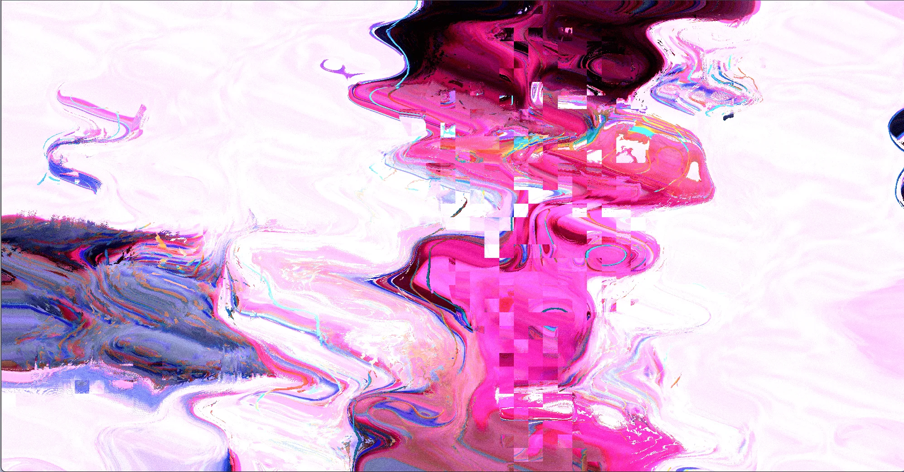

Choose a subject
Participants decide on a shared topic drawn from daily life or personal interests.
A two-person interactive installation built around distorted information, speech recognition, and dialogue. Unable to see one another, participants communicate through altered audio and incomplete text, experiencing how understanding slowly emerges through guessing, misreading, and correction.

Information rarely reaches another person with complete fidelity. Memory, experience, and position intervene, prompting us to reconstruct what was meant. Listen & Speak transforms this invisible gap into a dialogue that can be experienced firsthand.
Participants decide on a shared topic drawn from daily life or personal interests.
A curtain separates the pair; microphones and screens become their only connection.
Audio is altered and text is obscured, exposing the gaps created during transmission.
As semantic alignment increases, the visuals and sound gradually become clearer.


Fragmented letterforms, scan lines, and high-contrast color extend the idea of information being distorted and reconstructed across the identity, poster, and takeaway card.



I led the visual design and co-managed the project with Jin-Xian Yu. Beyond defining the visual language, I helped coordinate the schedule, communication, and design decisions that translated the interaction concept into a complete exhibition experience.
Yuki Chou, Jin-Xian Yu, Yu-Chun Su, Yu-Hsin Yang, Yu-Yang Chen, Fang-Rong Liu
Visual design / Concept / Development / PM / Planning